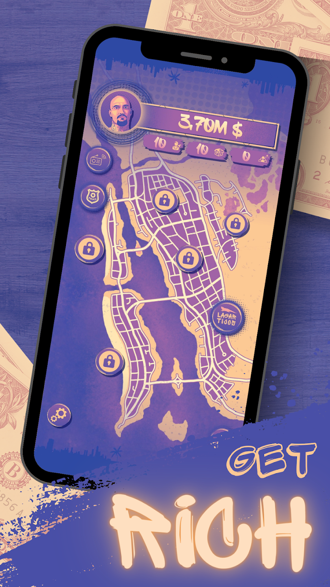
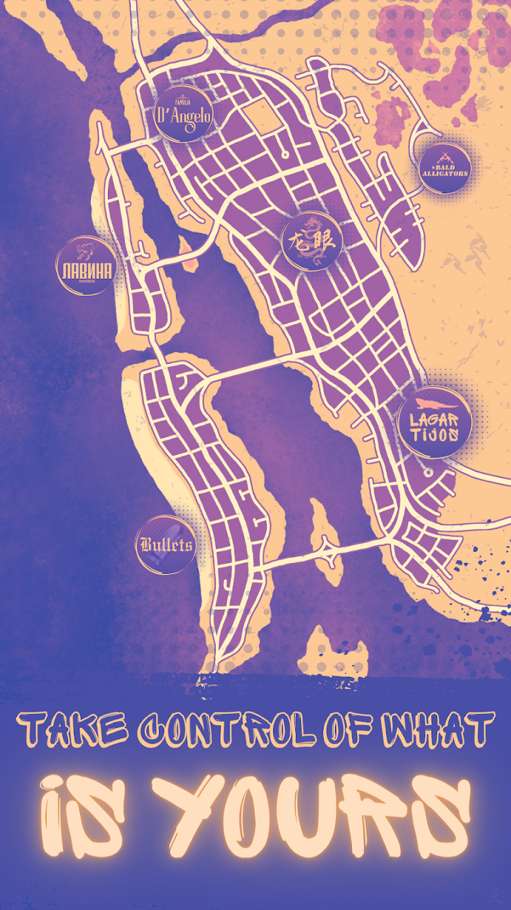
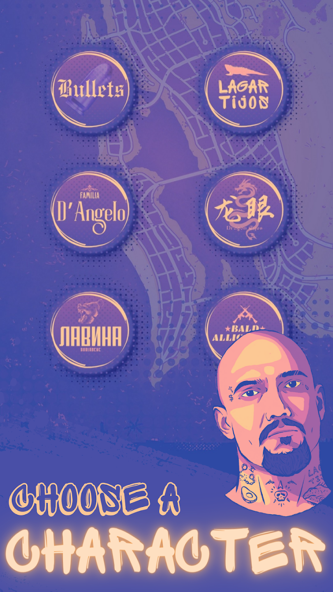
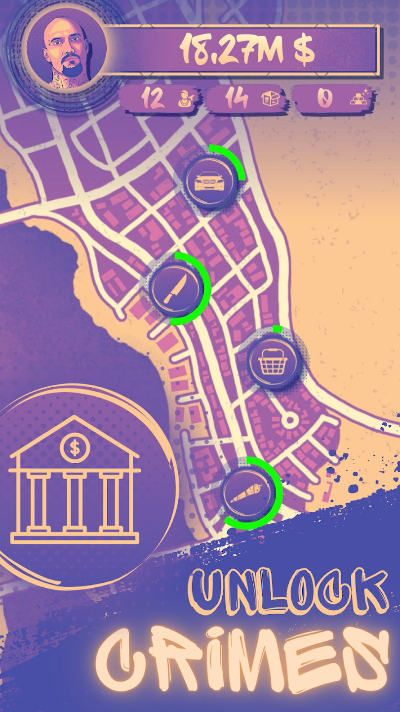
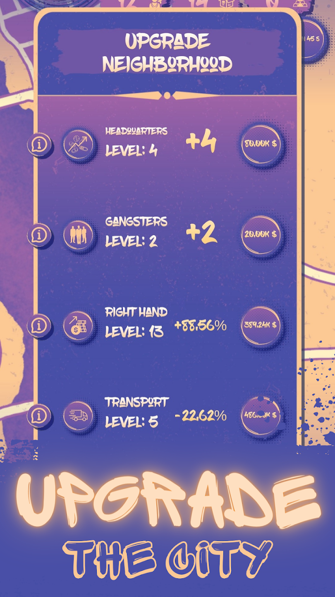
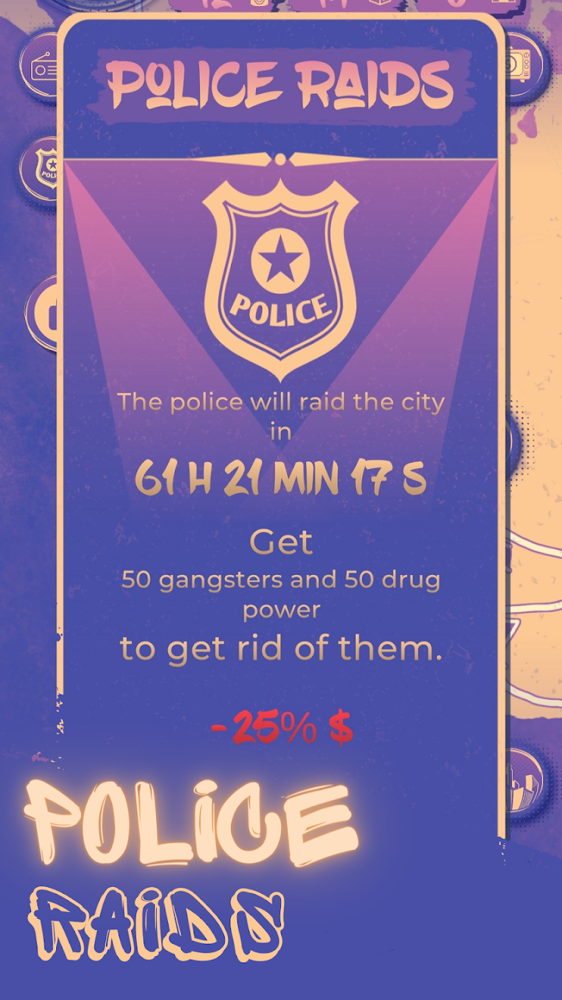
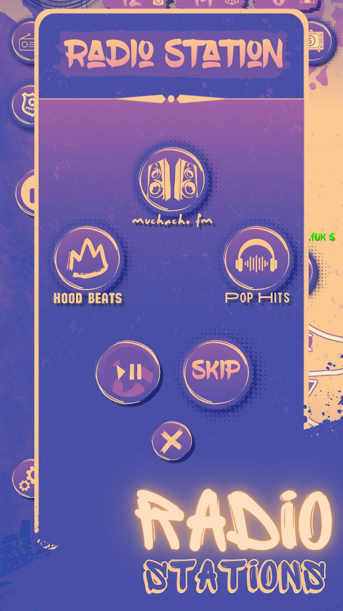
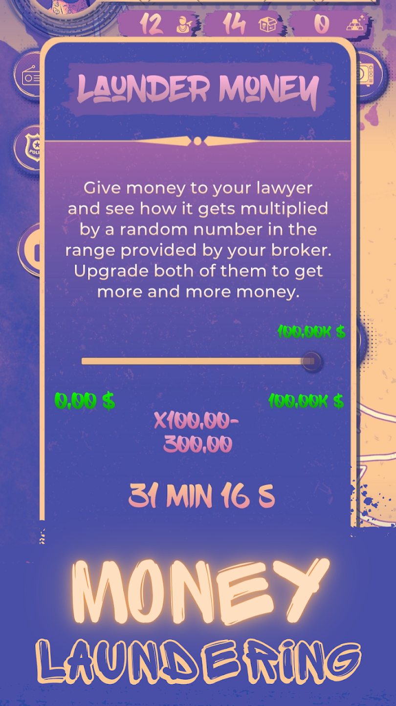

Idle Crimes Tycoon - Mafia Sim








Swipe or scroll to view gameplay screenshots.
Project Overview
Idle Crimes Tycoon - Mafia Sim is an idle management game where the primary objective is to build a criminal empire from the ground up. Set in a vibrant city inspired by 1980s Miami, players assume the role of a rising gang leader tasked with generating revenue, acquiring new territories, and taking control from rival gangs. The game is commercially published and currently available on Google Play.
Core Gameplay & Mechanics
The game relies heavily on strategic decision-making, resource management, and automated progression. The core mechanics include:
- Tycoon Economy & Upgrades: Players invest their funds into various criminal activities, such as robberies, smuggling, and legal fronts, across different neighborhoods. Each activity has its own automated progress cycle, and upgrades dynamically reduce cycle times while increasing overall payouts.
- Money Laundering Minigame: A risk-reward mechanic where players entrust funds to a "Lawyer" character. After a set real-time duration, the money is returned multiplied by a random factor between 1 and 3, which can be further improved via global upgrades.
- Police Raids: A recurring event that occurs every three days, threatening the player's economy. To prevent a severe 25% income penalty, players must stockpile secondary resources (Gangsters and Drug Power) to fend off the raid.
- Prestige System: To overcome late-game economic hurdles, players can "prestige", completely resetting their empire's progress in exchange for massive, permanent income multipliers that speed up subsequent playthroughs.
- Offline Progression: The game mathematically calculates the time elapsed between sessions, automatically generating and rewarding the player with accumulated wealth upon their return to encourage satisfying, quick check-ins.
My Contributions & Technical Implementation
As the sole Unity programmer on a three-person team alongside two artists, I architected and implemented the entirety of the game's codebase, transforming the design into a commercially published product:
- Gameplay & Systems Architecture: Programmed the entirety of the tycoon economy, including the automated progress bars, the offline time-calculation algorithms, and the math dictating stat growth and prestige multipliers. Collaborated closely on the foundational game design to ensure the mechanics translated into engaging code.
- User Interface Framework: Built the entirely UI-driven game loop. Developed complex navigation menus, upgrade interfaces and responsive progress sliders to provide clear, real-time feedback.
- Encrypted Save System: Designed and implemented a highly secure JSON save system to handle persistent session data. This system safely tracks offline timestamps and prevents players from easily exploiting local files to cheat the economy.
- Monetization & Unity Ads: Integrated the Unity Ads SDK to establish a live revenue stream. Engineered both skippable Interstitial ads and opt-in Rewarded ads, which grant players temporary income multipliers or time skips.
- Publishing & LiveOps: Led the Android build optimization process and managed the entire Google Play Console publishing pipeline. Post-launch, I have been responsible for maintaining the app and deploying updates when required.